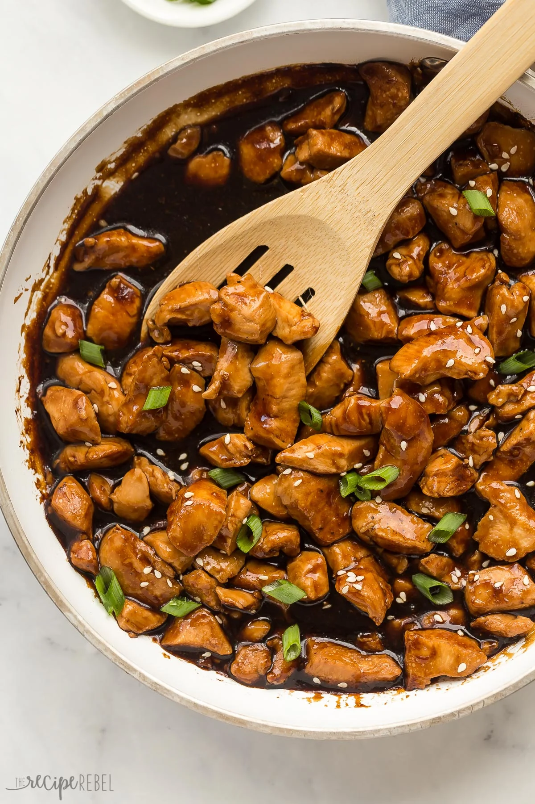

Teriyaki Chicken

Delicious Teriyaki Chicken
Who knew a simple sauce could be so delicious?
I like cooking this gluten-free teriyaki sauce and going to town, I tell you what.
Ingredients
- 1 cup Tamari
- 0.5 cup Water
- 0.5 cup Pineapple Juice
- 2 teaspoon Grated Ginger
- 1 teaspoon Garlic Powder
- 0.6 cup Brown Sugar
- 12 teaspoon Honey
- 2 tablespoon Rice Vinegar
- 2 teaspoon Sesame Oil
- 1 tablespoon Red Pepper Flakes
- 2 tablespoon Corn Starch
Steps
- Add all the ingredients to a medium saucepan
- Whisk thoroughly to combine
- Heat the sauce over medium heat, until simmering
- Reduce heat to low, simmer for 10-15 minutes until thickened
- Grill some chicken and slather that sauce on them bad boys